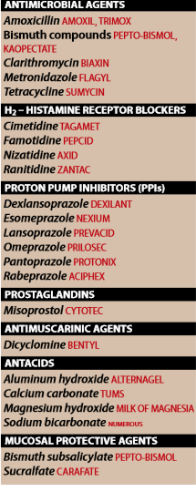
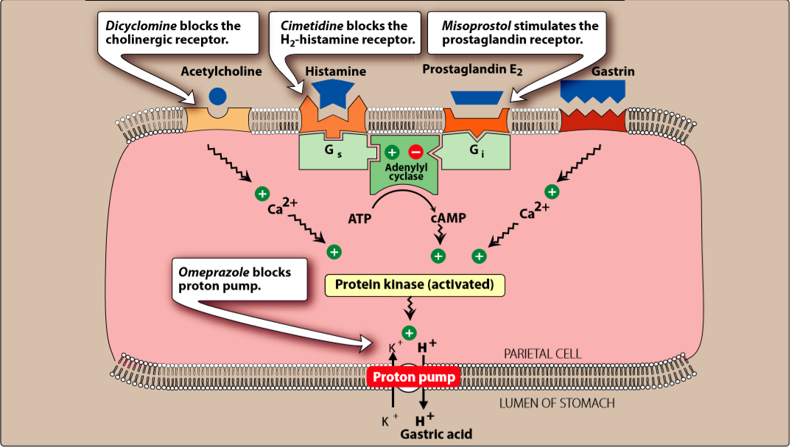

OVERVIEW:

II. DRUGS USED TO TREAT PEPTIC ULCER DISEASE AND GASTROESOPHAGEAL REFLUX DISEASE
⇒ FACTORS:
- G- Helicobacter pylori
- NSAIDS
- ↑ hydrochloric acid secretion
- inadequate mucosal defense against gastric acid
⇒ TREATMENT APPROACHES
- ANTIMICROBIAL AGENTS:
- iple therapy — PPI + metronidazole or amoxicillin + clarithromycin
- quadruple therapy — bismuth subsalicylate + metronidazole+etracycline + PPI, a 2-week course.
→ reuglation of gastric acid secration

→ acid secration stimulated by
— acetylcholine — histamine — gastrin —
→ activation of adenylyl cyclase → stimualtes H/K+-ATPase proton pump to secrete hydrogens ions in exchange of K+ into the lumen of the stomach
→ Prostagladins + somatostasin diminish gastric acid production
⇒ AGENTS:
→ CLIMETIDINE RANITIDINE FAMOTIDINE NIZATIDINE (potently inhibitors 90%)//
1.ACTIONS:
- act selectively on H2 receptors in the stomach, blood vessels, and other sites no effect on H1 receptors.
- competitive antagonists of histamine and are fully reversible.
2.THERAPEUTIC USE: (usage of these agents has decreased with the advent of ppis)
a.Peptic uclers:
- promoting the healing of duodenal and gastric ulcers
- I.V. admn. prevent + manage actue stress uclers
- low doses(OTC) → preventaion and treatment of heartburn.
a.//CLIMETEIDINE://
- Orally amdn.
- distribute widely through the body (including breat milk and placenta)
- exreted mainly in urine
- short-serum half-lifef (which ↑ renal failure)
- 30% slowly inactivated by the livers oxygensae system (interfere with other drugs)
- 70% unchanged in urine
- inhibit C-450 and can slow or potentiate metabolism of other durgs (warfarin,diazepam,phenytoin,quinidie,theophylline etc)
- longer acting than Clim + more potent
- minimal side effects ( does not inhibit oxygenase system and does affect concentration of other durgs)
- 3 to 20 times more potent than Ranitidine
- metabolized by the kidneys
- bioavailability is nearly 100%
4.ADVERSE EFFECT
- reduced gastric acid production
- headache,dizziness,diarrhea and muscular pain
- confusion and hallugination when admn.IV. in elderly patients
- gymecomastia and galactorrhea
- ketoconazole which depends on an acidic medium for gastric absorbtion .
C.PROTON PUMP INHIBITORS PPIs
→ Inhibitors of the H+/K+-ATPase proton pump → supress secretion hydrogens ions
AGENTS:
→ OMEPRAZOLE DEXLANSOPRAZOLE ESOMEPRAZOLE LANSOPRAZOLE PANTOPRAZOLE RABEPRAZOLE//
1.ACTIONS:
- pro-drugs with an acidic-resistant enteric coating to protect them form premature degradtion by gastric acid
- coating removed in the alkaline duodenum → and the weak base asborbed and trasport to the parietal cell
- active form react with H/K ATPase
- 18hrs to be resynthesized
- omeprazole + sodium bicarbonate for faster absorbtion (OTC)
2.THERAPEUTIC USES:
- Stress ulcer treatment and prophylaxis
- treating erosive esophagitis
- active duodenal ulcer
- Zollinger-Ellison syndrome
- GERD
- should be taken 30 to 60 minutes before breakfast or the largest meal of the day
- h2-receptor antagonist after PPI's (cuz h2 will reduce the proton pump activity)
3.PHARMACOKINETICS
- effective orally
- metabolites of these agents excreted in urine and feces
4.ADVERSE EFFECT
- decrease the effectiveness of clopidogrel due to inhibition of CYP2C19
- Omeprazole has been shown to inhibit the metabolism of warfarin, phenytoin, diazepam, and cyclosporine through competitive inhibition of CYP450
- low vitamin B12
- Incomplete absorption of calcium carbonate product → CALCIUM CITRATE is the solution since citrate salt does not affect gastric pH
- diarrhea
D.PROSTAGLADINS
⇒ Misoprostol
- prostagladin E analogue
- less effective than h2.PPIs
- cytoprotective actins ( inhibits secretion of HCL and stimulates secretion of mucus and bicarbonate)
- produce uterine contractions and logdging of the fetus and is CONTRAINDICATED to pregnancy
- diarhea and nausea is the most common adverse effect
E.ANTACIDS:
→ Weak bases react with gatric acid to form water and a salt to dimish gastric acidity
- pepsin is inactive at a pH greater than 4↓ pespsin activity
1.CHEMISTRY
- acid-neutralizing ability depends on whether the stomach is full or empty ( full stomach more time for antacid to react)
⇒ ALUMINUM HYDROXIDE MAGNESIUM HYDROXIDE CALCIUM CARBONATE ( reacts with HLC to form CO2 and CaCl2 and its commonly used preparation)
2.THERAPEUTIC USE:
- symptomatic relief of peptic ulcer + GERD // may also promote healing of duodenal ucler.
3.ADVERSE EFFECTS:
- Al(OH)3 → constipation
- Mg(OH)2 →diarhhea
- NaHCO3 → systematic absorption produce metabolic alkalosis bleching + flatulence
- ad may occur in patients with renal impairment due to acumulation of cations
F.MUSCOSAL PROTECTIVE AGENTS:
→ cytoprotective compounds
- enchance mucosal protection preventing mucosal injury reducing inflammation // healing existing ulcers
1.//SUCRALFATE://
- complex of aluminum hydroxide and sulfated sucrose
→ forming complex gels with epithelial cells
→ create a physical barrier that impairs diffusion of HCL and prevents degradation of mucus by pepsin
→ stimulate PG release and inhibit peptic digestion
- requires acidic enviroment and absorbed systemically with good tolerance
2.//BISMUTH SUBSALICYLATE://
- heal peptic ulcer
- inhibit activity of pepsin ↑ secration of mucus coat and protect the ulcer crater
{kind=link}
{kind=link}